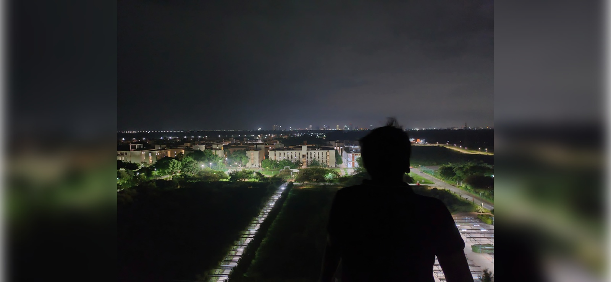

Lal Minar will always hold a special place in my heart. As the tallest building on the IIT Gandhinagar campus, it offers one of the best views on campus. From here, you can see the sprawling campus in its entirety, with clear views of the Sabarmati River and even the futuristic GIFT City in the distance. It’s not just the height of the building that stands out, but the experience it offers—a sense of tranquility, beauty, and connection to the larger world beyond the campus.
This iconic structure has become a favorite spot for many of us. It’s one of the best places to sit down, especially at night when the campus lights twinkle beneath you. Some of my fondest memories have been created here, including celebrating a batchmate’s birthday with friends, surrounded by the breathtaking view. The sense of community and joy that fills this space is unmatched.
Beyond its architectural beauty, Lal Minar symbolizes a powerful message that resonates with all IITGN students—nothing is impossible. Standing there, looking out over the campus, it serves as a reminder of our potential and the heights we can reach. It’s not just a building; it’s an emblem of our dreams, ambitions, and the endless possibilities that lie ahead.